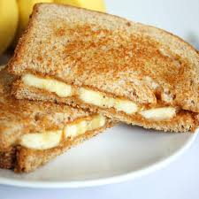

Peanut Butter Sandwich

Description
My recipe for peanut butter sandwich.
Ingredients
- 2 slices of bread
- Peanut butter
- Banana (Optional)
Steps
- Get 2 slices of bread
- Add peanut butter on one of those slices of bread
- Then add sliced bananas onto the bread (Optional)
- Then close it with the other slice of bread
- Enjoy!